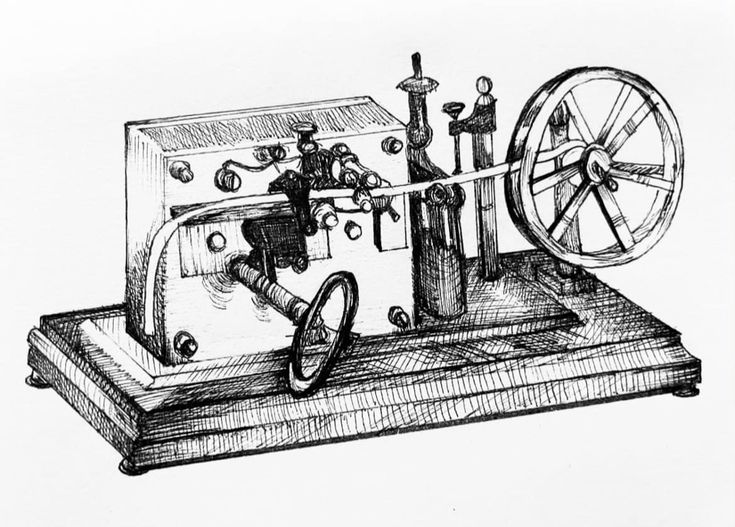
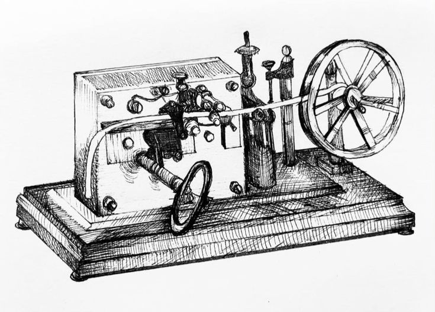

Historia
La evolución de las redes de computadoras ha sido crucial para el desarrollo de la tecnología moderna. Aquí, exploramos los hitos más importantes en su historia:
Primeros intentos (siglo XIX):Los primeros sistemas de transmisión de datos incluyeron el telégrafo óptico, desarrollado en Suecia y Francia. Estos sistemas utilizaban torres con brazos o persianas para codificar y transmitir información a grandes distancias.
Telégrafo y teléfono:A mediados del siglo XIX, el telégrafo eléctrico y posteriormente el teléfono revolucionaron la comunicación, permitiendo la transmisión de mensajes a larga distancia de manera más rápida y eficiente.
ARPANET (1960s):Financiado por el Departamento de Defensa de los Estados Unidos, ARPANET fue la primera red de computadoras. Diseñada para conectar instituciones de investigación, permitió el intercambio de información entre computadoras ubicadas en diferentes lugares.
Nacimiento de Internet:A partir de los avances de ARPANET, se desarrolló Internet, que se convirtió en la red global que conocemos hoy. Internet ha transformado todos los aspectos de la sociedad, desde la comunicación personal hasta los negocios y la educación.
Evolución y expansión:En la actualidad, las redes de computadoras son fundamentales para la operación de casi todas las áreas de la sociedad, incluyendo la salud, la industria, el entretenimiento y más. La continua evolución de la tecnología de redes promete aún más innovaciones en el futuro.
 
